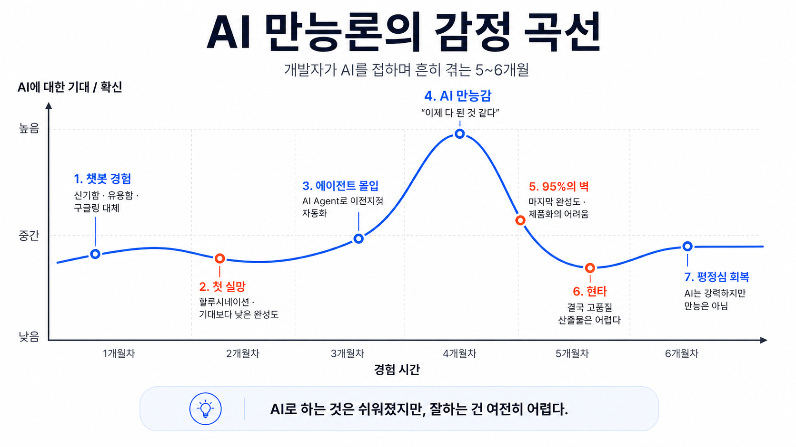

Brief Seminar · 30 min
AI Agent 시대의 짧은 안내
S/W개발팀 · 김학민 · 2026.04
지난 1년
단순 질의응답을 넘어, 스스로 도구를 쓰고 일을 마무리하는 AI
코딩만이 아니라 모든 지식 노동이 영향권에 들어왔다
Chapter 01
수치로 드러나는 변화
개발 영역에서 1~2년 사이 일어난 변화가 — 문서 · 분석 · 커뮤니케이션으로 옮겨오는 중
관찰
"자연어가 새로운 프로그래밍 언어가 되고 있다"Jensen Huang · NVIDIA
자연어가 곧 명령어가 되면서 — 누구나 컴퓨터에 직접 일을 시킬 수 있는 시대로
Chapter 02 · 챗봇과 에이전트
1번 누르세요, 2번 누르세요
정해진 메뉴 바깥은 불가
매번 처음부터 다시 설명
맥락을 이해하고 알아서 조사
판단 · 실행 · 중간 보고
피드백 반영 · 후속 조치까지
두 체험은 구조 자체가 다르다 — 한쪽으로 다른 쪽을 가늠하기 어렵다
| 챗봇 | 에이전트 | |
|---|---|---|
| 출력물 규모 | 1–2 페이지 텍스트 | 보고서 + 슬라이드 + 데이터 |
| 소요 시간 | 1–3분 | 30분 ~ 수 시간 · 자율 |
| 사람 개입 | 매 응답 후 재질문 | 시작 · 종료 · 중간 확인 |
| 도구 접근 | 대화창 | 웹 · 파일 · 코드 실행 |
대화의 도구에서 일을 대신하는 도구로 — 규모 · 시간 · 도구의 폭이 모두 달라진다
AI의 추론 능력
Claude · GPT · Gemini
도구 사용 · 실행
Claude Code · Codex
판단과 지시
도메인 지식 · 맥락
셋 중 어느 하나가 0이면 결과도 0 — 결국 쓰는 사람이 핵심
Excel 자동화 · Claude Code
Chapter 03
무엇이 더 중요해지는가
가지고 있는 것을 더 크게 만드는 도구
축적된 노하우 · 명확한 프로세스
혼란 · 오해 · 검증 부재
결국 조직의 기반 — 학습 문화 · 공유 습관 — 이 효과의 크기를 정한다 · Google DORA 2025

AI로 하는 것은 쉬워졌지만 — 잘하는 것은 여전히 어렵다
없는 데이터를
자신 있게 만들어 낸다
가짜 출처 · 틀린 수치가
보고서에 섞일 수 있다
AI 산출물은
사람이 검증한다
그대로 쓰는 게 아니라 — 읽고 · 따져보고 · 다듬는 것이 사람의 일
AI는 토큰을 쓰고 — 사람은 주의 · 에너지 · 인지라는 한정된 자원을 쓴다
도구가 빨라졌다고 사람까지 빨라질 필요는 없다 — 너무 빨리 쓰면 번아웃이 온다
Chapter 04 · 우리의 실천
사내망 보안 — 프론티어 AI 직접 사용 제한
데이터 보안 — 외부 서비스 노출 우려
인식 격차 — 활용이 일부에 집중
사외망 · 데이터 분류 작업 진행
전사 차원의 AI 활용 방침
교육 · 사례 공유 누적
"이건 되더라"
"저건 안 되더라"
잘 되는 프롬프트
유용한 도구의 공유
AI 활용이
자연스러운 조직
개인 단위의 숙련보다 조직 단위의 확산이 훨씬 더 누적적으로 큰 효과를 만든다
오늘의 정리 · Q & A
Brief Seminar · 2026.04 · 김학민